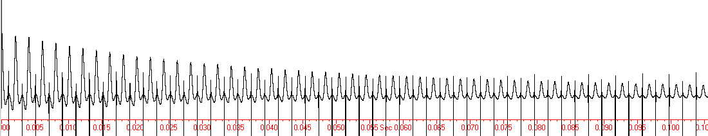
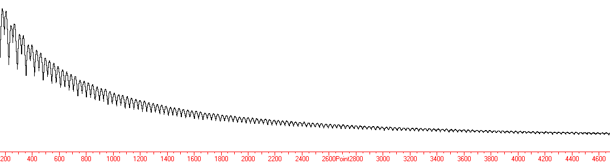
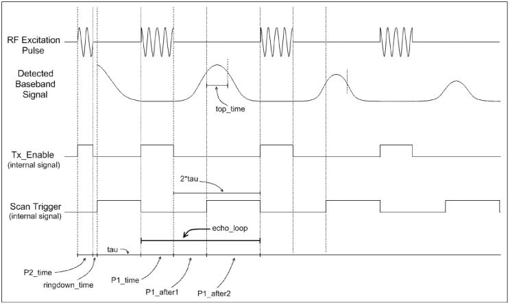

This directory contains a sample program that can perform CPMG NMR
experiments using the RadioProcessor.
The included pictures
are of a CPMG experiment conducted on household cooking oil using a
10.8MHz permanent magnet.

Fig
1.
This shows what the signal looks like when capturing
data continuously during a CPMG experiment. The large spikes seen
between the echoes are the 180 degree
pulses being applied.

Fig
2.
It is also possible to capture only a small number of points around the
tops of the echoes.
This figure shows the same experiment as above, however instead of
capturing data continuously throughout the experiment, only 32 points
at the peak of each echo is captured. This allows more echoes
to be captured by not storing unwanted data. The number of points
captured per peak can be reduced to as little as 1 point.
Figure
3 below shows the pulse sequence used by the RadioProcessor to
perform this experiment. Each vertical line is a new
instruction, and the names of the delays used are shown with arrows.
The CPMG program included in this directory will accept command line
parameters which can be used to specify
the
values used for each of the pulse program parameters.

Fig
3
Shown in this figure is what
the RF excitation pulse will look like, as well as what the acquired
baseband data will look like. The tx_enable and scan_trigger signals
are both internal signals used to control the timing of the
experiment. Note that when the CPMG program is configured to acquire
data in a continuous scan, the scan_trigger signal is only enabled
after the 90 degree pulse and not after the 180 degree pulses.
| 1 |
2 |
3 |
4 |
5 |
6 |
7 |
8 |
9 |
10 |
11 |
12 |
13 |
14 |
|
| CPMG | SF |
SW |
P2_time |
ringdown_time |
P2_phase |
P1_phase |
tau |
echo_points |
echo_loops |
num_scans |
fnam |
bypass_fir |
adc_freq |
wait_time |
| MHz |
kHz |
us |
us |
degrees |
degrees |
us |
# |
# |
# |
0 or 1 |
MHz |
s |
SW - Desired baseband spectral width, in kHz
P2_time - Pulse length of 90 degree pulse, in us
ringdown_time - Ring down time after 90 degree pulse, in us
P2_phase - Phase of 90 degree pulse
P1_phase - Phase of 180 degree pulses
tau - 2*tau is the time between 180 degree pulses
echo_points - Number of points to capture at the top of each echo. Set to 0 to do a continuous scan (like Fig. 1)
echo_loops - Number of echoes to produce
num_scans - Number of times to repeat the scan (and average the data)
fname - Filename to store data to
bypass_fir - A 1 bypasses the signal around the FIR filter, or 0 to use it. See manual for details on this
adc_freq - Clock frequency of the board, in MHz
wait_time - Time to allow sample to relax after each scan (in seconds)
There are a few parameters in Figure 3 not specified on the command line. These are calculated as:
P1_time: 2*P2_time
top_time: this is calculated based on echo_points and the SW used
P2_after1: 2*tau - top_time/2
P2_after2: 2*tau + top_time/2
A recommended approach to performing CPMG experiments is to initially set echo_points to 0 so that data is acquired continuously. This is the easiest way to ensure the timing parameters have been specified correctly. Once this has been accomplished, the user can experiment with capturing only the tops of the echoes. Note: For this experiment, the spectrometer frequency must be precisely on resonance, and the P2_time must be the exact 90 degree pulse width.